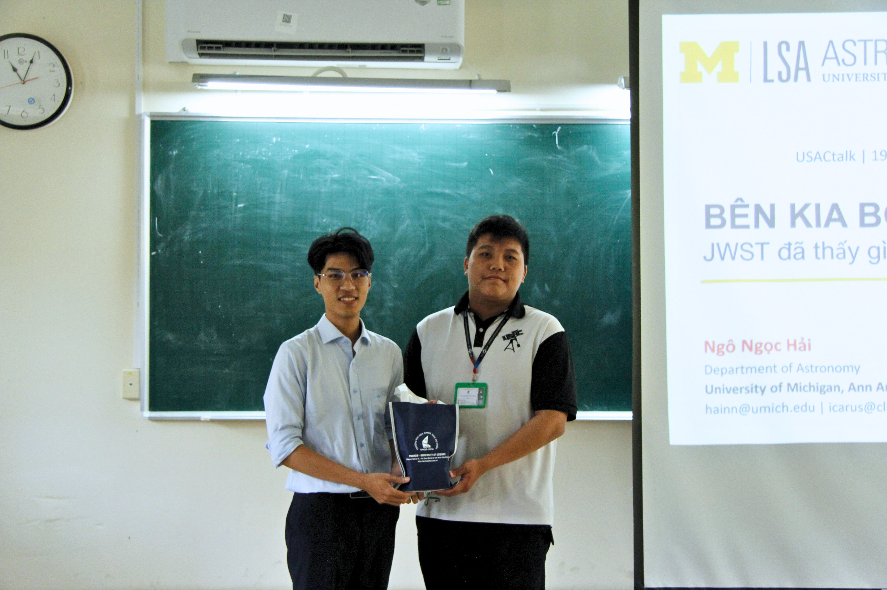
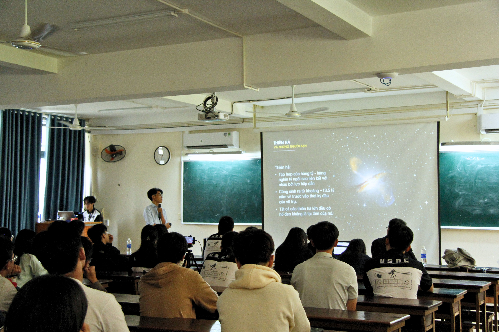

On April 19, 2026, the University of Science Astronomy Club (USAC), in collaboration with the Faculty of Physics and Engineering Physics, hosted USACTalk #04 in a packed, lively room for a session titled "Beyond the Darkness: What Has JWST Seen at the Edge of the Universe?", presented by Hai Ngo Ngoc, a Ph.D. candidate at the University of Michigan, Ann Arbor.
The talk opened by sparking the audience's curiosity with foundational yet fascinating physics concepts such as escape velocity and the bending of light. Revisiting the historic 1919 solar eclipse experiment, Hai emphasized that the curvature of spacetime itself laid the groundwork for how we understand black holes and other large-scale cosmic structures today.
Into the Dark Ages
The heart of the talk carried the audience deep into the "Dark Ages" — the era in which the universe transformed from primordial clouds of gas into brilliant, star-filled galaxies. With the help of the James Webb Space Telescope, the speaker revealed striking results: galaxies formed far earlier than theoretical models had predicted. Objects such as JADES-GS-z13-0 (observed just 300 million years after the Big Bang) and GN-z11 have shattered previous observational limits, raising major questions for cosmologists about just how quickly the early universe assembled itself.
A particular highlight that drew strong interest was the discovery of "Little Red Dots" (LRDs) — extremely compact galaxies that appear to host rapidly growing black holes at their centers. The detection of LRDs, together with traces of oxygen found only 300 million years after the Big Bang, shows that the very first generation of stars formed, died, and recycled matter at a stunning pace — far faster than earlier scenarios had assumed.


Moments from USACTalk #04 — VNUHCM, University of Science, Campus 2
The Race Between Black Hole "Seeds"
The talk then turned to the competition between different black hole "seed" scenarios. To explain how supermassive black holes could already exist at the edge of the observable universe, two leading hypotheses sparked lively discussion:
Light Seeds
Form from the collapsed remnants of the very first stars, then grow larger over cosmic time through repeated mergers and accretion.
Heavy Seeds
Form directly from the direct collapse of massive primordial gas clouds, skipping the intermediate stellar stage entirely.
Looking Ahead
The seminar didn't stop at present-day discoveries — it also looked to the future. As JWST continues to probe deeper into the cosmos, accretion models such as Bondi–Hoyle–Lyttleton will be put to the test, helping us understand more precisely how black holes devour surrounding matter to grow.
USACTalk #04 closed on a message that resonated throughout the room: humanity's enduring curiosity and drive to push beyond the darkness. The seminar wrapped up with an extended Q&A session covering everything from the nature of the event horizon to the most advanced infrared observing techniques available today.
USAC would like to sincerely thank Hai Ngo Ngoc for his in-depth, passionate sharing. We hope to welcome him back for many more engaging talks in the future. ✨